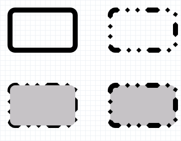

title: ID2D1RenderTarget FillRoundedRectangle methods (D2d1.h) description: Paints the interior of the specified rounded rectangle. ms.assetid: 9c4765b0-858f-4a20-b044-0acf87a1f131 keywords:
Paints the interior of the specified rounded rectangle.
| Method | Description |
|---|---|
| FillRoundedRectangle(D2D1_ROUNDED_RECT&,ID2D1Brush*) | Paints the interior of the specified rounded rectangle. |
| FillRoundedRectangle(D2D1_ROUNDED_RECT*,ID2D1Brush*) | Paints the interior of the specified rounded rectangle. |
This method doesn't return an error code if it fails. To determine whether a drawing operation (such as FillRoundedRectangle) failed, check the result returned by the ID2D1RenderTarget::EndDraw or ID2D1RenderTarget::Flush methods.
The following example uses the DrawRoundedRectangle and FillRoundedRectangle methods to outline and fill a rounded rectangle. This example produces the output shown in the following illustration.

// Called whenever the application needs to display the client
// window.
HRESULT DrawAndFillRoundedRectangleExample::OnRender()
{
HRESULT hr;
// Create the render target and brushes if they
// don't already exists.
hr = CreateDeviceResources();
if (SUCCEEDED(hr))
{
// Retrieve the size of the render target.
D2D1_SIZE_F renderTargetSize = m_pRenderTarget->GetSize();
m_pRenderTarget->BeginDraw();
m_pRenderTarget->SetTransform(D2D1::Matrix3x2F::Identity());
m_pRenderTarget->Clear(D2D1::ColorF(D2D1::ColorF::White));
// Paint a grid background.
m_pRenderTarget->FillRectangle(
D2D1::RectF(0.0f, 0.0f, renderTargetSize.width, renderTargetSize.height),
m_pGridPatternBitmapBrush
);
// Define a rounded rectangle.
D2D1_ROUNDED_RECT roundedRect = D2D1::RoundedRect(
D2D1::RectF(20.f, 20.f, 150.f, 100.f),
10.f,
10.f
);
// Draw the rectangle.
m_pRenderTarget->DrawRoundedRectangle(roundedRect, m_pBlackBrush, 10.f);
// Apply a translation transform.
m_pRenderTarget->SetTransform(D2D1::Matrix3x2F::Translation(200.f, 0.f));
// Draw the rounded rectangle again, this time with a dashed stroke.
m_pRenderTarget->DrawRoundedRectangle(roundedRect, m_pBlackBrush, 10.f, m_pStrokeStyle);
// Apply another translation transform.
m_pRenderTarget->SetTransform(D2D1::Matrix3x2F::Translation(0.f, 150.f));
// Draw, then fill the rounded rectangle.
m_pRenderTarget->DrawRoundedRectangle(roundedRect, m_pBlackBrush, 10.f, m_pStrokeStyle);
m_pRenderTarget->FillRoundedRectangle(roundedRect, m_pSilverBrush);
// Apply another translation transform.
m_pRenderTarget->SetTransform(D2D1::Matrix3x2F::Translation(200.f, 150.f));
// Fill, then draw the rounded rectangle.
m_pRenderTarget->FillRoundedRectangle(roundedRect, m_pSilverBrush);
m_pRenderTarget->DrawRoundedRectangle(roundedRect, m_pBlackBrush, 10.f, m_pStrokeStyle);
hr = m_pRenderTarget->EndDraw();
if (hr == D2DERR_RECREATE_TARGET)
{
hr = S_OK;
DiscardDeviceResources();
}
}
return hr;
}
| Requirement | Value |
|---|---|
| Header | D2d1.h |
| Library | D2d1.lib |
| DLL | D2d1.dll |
How to Draw and Fill a Basic Shape
�
�